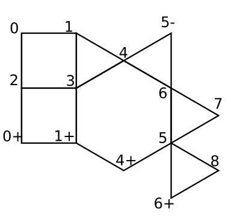

Technical notes:
To add stars and rosettes, I imagine each polygon to be triangulated by connecting each vertex to the center. I do an affine map from that triangle to the matching triangle of a regular polygon. This gives me a heuristic that will be perfect on regular polygons. The figures below show how I break up a regular polygon to find point locations. Both are based on the triangle from center to vertex to edge midpoint. On the left, the rosette has many similar triangles that we work with. On the right, the star has just one extra non-similar triangle that we use the law of sines to find a distance. When I add the rosette to the center, I use a different heuristic – to make the outermost angle about 120 degrees.
Why all the funny letters at the start of variables?
I usually don't use Hungarian Variable Notation. It takes a lot more work and it looks clunky. However, I started writing this program and promptly got confused. Here's why:
I wanted the points to be only stored in one place, so I could just make one change and all the polygons that shared that point would be adjusted. Also, the columns will repeat vertically, so I want to be able to refer to either the regular point, or the point mapped up or down by the translation vector. So my goal was to have something similar to the figure at the below.

This has only nine points, but some are mapped up (+) or down (-) (computer screen up is really down and vice versa.) So I have a list of coordinates for points 0 through 8. I list the polygons by an index to the point and what mapping we use. For example the lower square would be listed: 2[0,0], 3[0,0], 1[0,1], 0[0,1]. To draw this, we would look up the coordinates of point 2, then translate it by [0,0] then repeat this for each point. It gets worse. When I ask it to add the hexagon. It has to use some old points and some new points. Here we added points 5 and 6. So I need to figure out where these points should go. To do this, I look at the center of gravity of the edge points. At this point, that was points 1, 3, and 4. In the figure below, I marked the center of gravity with a little square.
This lets me figure out the coordinates for our new points 5 and 6. I need to know which three points were on the edge to make up my hexagon. Here they were 4[0,0], 3[0,0], and 1[0,1]. I make up my list of points to use: 5[0,0], 6[0,0], 4[0,0], 3[0,0], and 1[0,1]. Then I use a different index to tell which points get connected to make the hexagon. So two layers of indices, often in arrays as we collect different ones of them. The complexity increases whenever the column doubles. This means that the edge doubles and we need multiple copies of whatever polygon we are adding. For example, in the top figure, on the far right, we are adding one triangle. (new points 7 and 8) But the height has doubled, so we need to make two copies of the triangle.
I needed the Hungarian Notation or I got lost. (And I still sometimes get lost...)
Say you want to add this column:
Note if we travel up the edges, we find the edge type.
The left side is the starting edge: Left-Left-Right. (LLR)
The right side is the final edge: Left-Right-Right (LRR)
We need to draw the part that is repeated:
Let's walk through how I do it. We would like all the polygons to be regular, but that's impossible here. Use some drawing program that is precise and can measure. I use SketchUp.
I put in a regular octagon and rotate it to the correct angle. I copy another one below it.
I connect the lines to make the triangles, then erase the second octagon.
We have this figure:
Assign point numbers, starting with point zero. Assign numbers to the new points we add first. Be sure not to give two numbers to a point and its translation. Number the old points last in the order of that edge type. (LLR here. Imagine we were traveling up the left edge. 4 is a left turn. 5 is a left turn. 6 is a right turn. that's why I gave them these numbers.)(In this section, I'm using regular x-y coordinates - not as on the computer screen. Flip everything vertically if you want to know what the computer thinks of it.)
This is our labeled figure. Note how I put 1(0,-1) to show this is point 1 translated back by vector B. Same thing with two other translations. I leave off anytime we don't translate. I write 2 instead of 2(0,0) since we aren't translating point 2 anywhere.
Now we need to find where the old origin is in respect to these polygons. This diagram shows where the origins are for each of the edge types: S, LR, LLR, LRR, LLRR, LLRLR, LRLRR. The origin is the center of gravity horizontally. I line it up vertically with the symmetric point the furthest to the right.
For us, we have LLR. Vertically, the old origin lines up with the midpoint of segment 4_5. Horizontally we go 2/3 of the way from 6 to the segment 4_5. This locates our old origin.
Next, scale the whole drawing to match its size. (S and LR have size one. All others have size two.) This means that the distance between point 1 and point 1(0,-1) needs to be a distance of two. The distance used to be 2.613126 so I find scale factor = 2 / 2.613126 = 0.765367.
With everything scaled, I find these coordinates:
0 = (0.805, 2)
1 = (1.512, 1.707)
2 = (1.805, 1)
3 = (1.512, 0.293)
Now we know almost enough to add this to our program. This goes in the A6 or A7 or whatever. I usually copy an old column and make the needed changes. We end up with this:
var col8v3e3v = {
nNumPolys : 3,
sInType : "LLR",
sOutType : "LRR",
nMultiple : 2,
aa2NewPts : [[0.805, 2],[1.512, 1.707],[1.805, 1],[1.512, 0.293]],
nNumOldPts : 3,
aapmPolys : [
[[0,[0,0]],[1,[0,0]],[2,[0,0]],[3,[0,0]],
[0,[0,-1]],[5,[0,0]],[6,[0,0]],[4,[0,1]]],
[[3,[0,0]],[1,[0,-1]],[0,[0,-1]]],
[[0,[0,-1]],[4,[0,0]],[5,[0,0]]]
],
apmEdge : [[2,[0,0]],[1,[0,0]],[3,[0,1]]],
apmTrans : [[1,[0,0]],[2,[0,0]],[3,[0,0]]]
};
var butCol8v3e3v;
function fnSetCol8v3e3v() {fnStoreStack();fnCheckDouble ();fnAddCol(col8v3e3v);fnLRRButtons();draw();}
Let's explain this.
The first line is the name for this column: "col8v3e3v." I use a very clunky naming scheme - basically telling you how many sides in the polygon and which part of it is facing left: (e)dge, (v)ertex, or (o)ther. Since we have an octagon with the vertex facing left, then the edge of a triangle, then the vertex of a triangle, I name this column 8v3e3v. Yeah. Messy.
nNumPolys = number of polygons = 3.
sInType & sOutType are the edge types.
nMultiple is the size - either 1 or 2. One if sInType is "S" or "LR," otherwise two.
aa2NewPts are the coordinates of the new points 0 to 3 that we found. Note how we put everything in nested brackets.
nNumOldPts = Number of old points on the edge = 3 since LLR has three letters.
aapmPolys is the polygons. We have each polygon in brackets - made up of a list of points and mappings. Here we need to include the [0,0] if there is no translation. Separate the different brackets by commas.
apmEdge is the new edge.
As we see above, the LRR will start with 2(0,0) then 1(0,0) then 3(0,1). We find this by traveling up the right hand edge. We have to start with point 2 since it's the left turn.
apmTrans is how we find where the new origin is. We list which points we average to find it. Sometimes we have to include a point and its translation - then we double the other points so we get a correct average. In this case, we don't have to do that.
We just have to average points 1, 2 and 3.
"var butCol8v3e3v;" says we will set up this button. (We do that later on.)
function fnSetCol8v3e3v() {fnStoreStack();fnCheckDouble ();fnAddCol(col8v3e3v);fnLRRButtons();draw();} - this is a function of what to do when we press the button. We only use fnCheckDouble () if the size is two. We change the fnLRRButtons() to be whatever edge type we end on.
Then you page down through your A7 program and add the 8v3e3v column where needed:
Once in the fnHideButtons function.
Once in the fnLLRButtons function. (or whichever sInType says)
A block of threee in the fnCreateButtons function.(and you gotta figure out the size for this...After scaling the height, find the average length of the right side edges. In our case the three lengths are 0.765, 0.765 and 0.585 with an average of 0.706)
And lower down in the fnCreateButtons function under /* LLR buttons */ add the button in a new location. (or under whichever edge type you have.) We have either 10 or 70 (or 130) for the x coordinate. We increase the y coordinate by 60.
Then I test it. It will put a blob there since we don't yet have a png file, but it should work. I test it. Then I grab a screen shot of the stack including the new shape. I plug it in to the button template
and create a new png file for the button - usually using Paint.